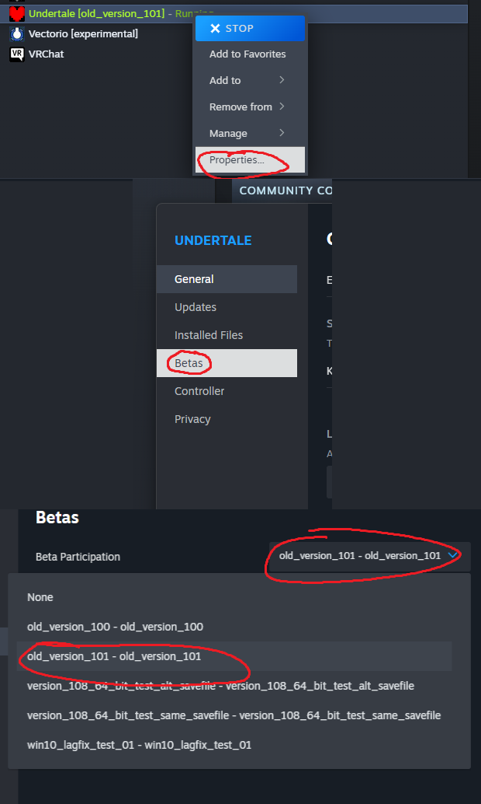
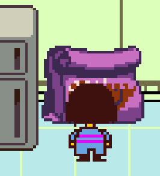
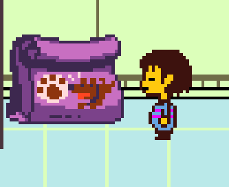
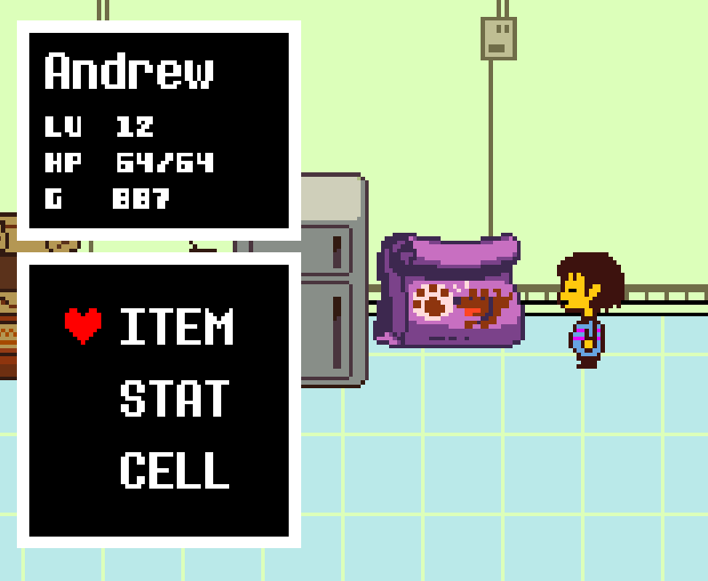
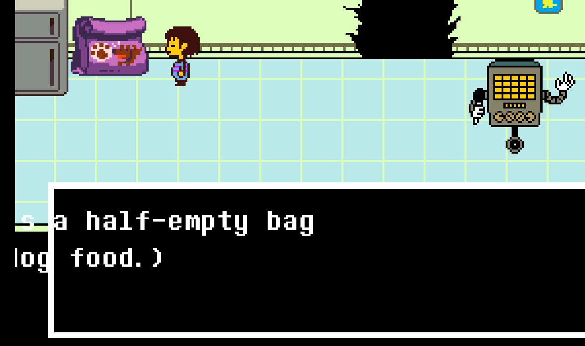
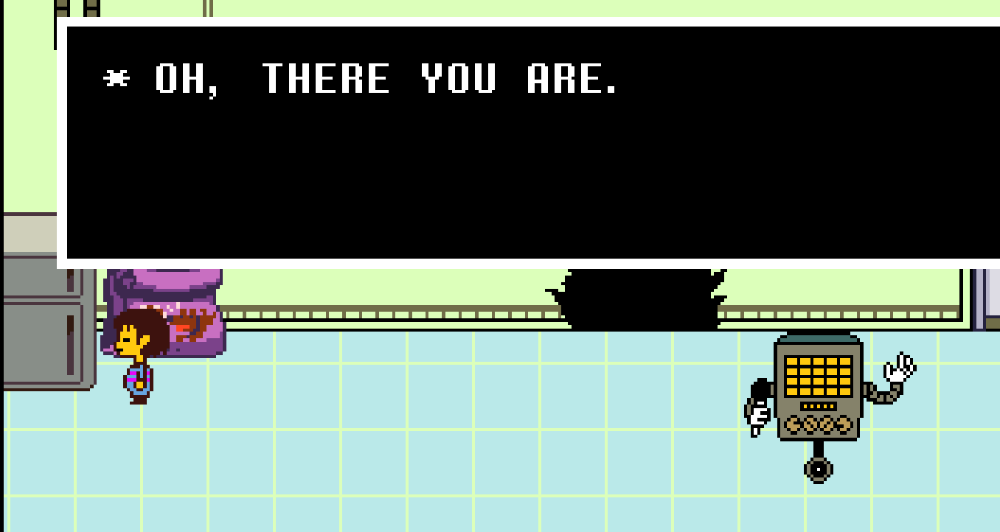
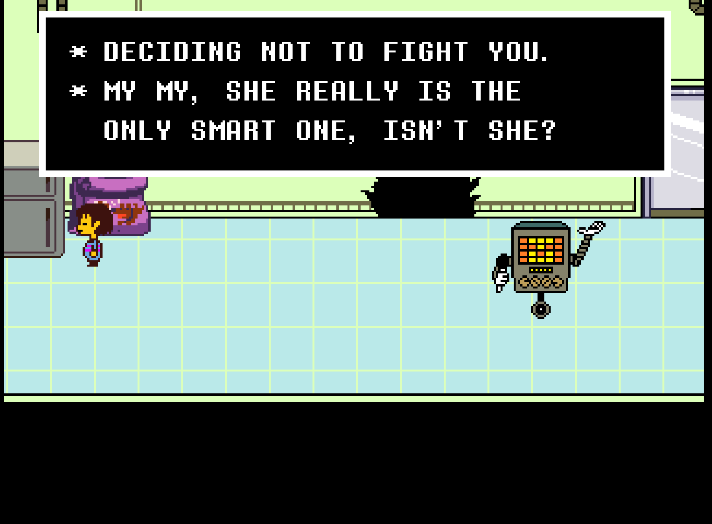
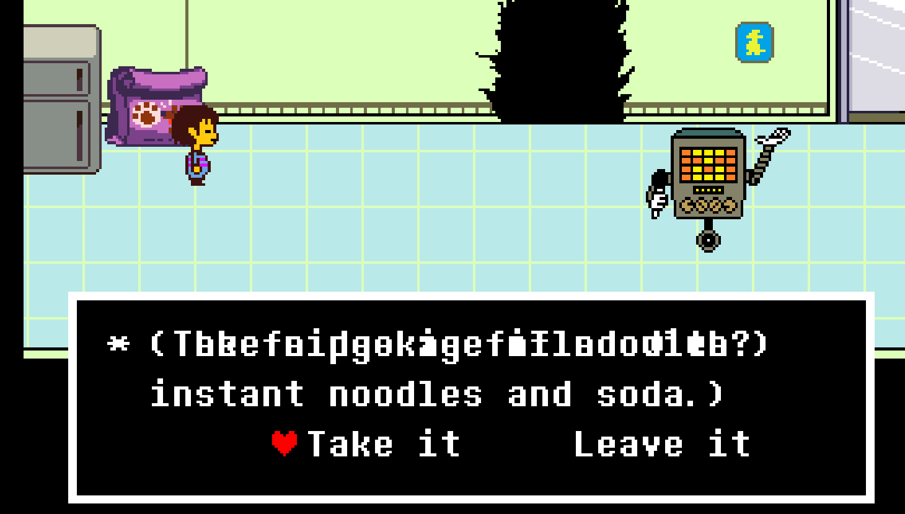
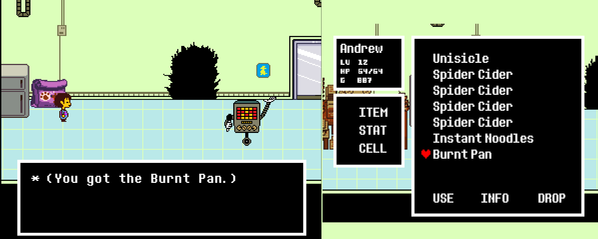

Early Burnt Pan
I went crazy trying to figure out how to do the Burnt Pan glitch.
Here's a setup I picked up from speedrunning videos!
Note!
Make sure you are on "old_version_101" beta.
This is just good for speedrunning in general.
If you are doing a speedrun, use "old_version_101".

Glitch:
Step 1:
Enter Alphys' lab, and go right below the dog food.

Step 2:
Inch closer to the right by tapping right + C, until you can go up.

Step 3:
Once you are at the dog food, hold up-left. Then, still holding up-left, tap right and C.
If it worked, you should be facing left inside your menu, and you should've moved one step to the right.
(you may have to repeat step 3 one more time)

Step 4:
Still holding up-left, close your menu with X and tap Z to interact with the dog food.
The camera should pan over while the dog food dialogue is up.
You can now let go of up-left.

Step 5:
Mash Z and X to get out of the dog food dialogue while it's active.
While you can still move, go right next to the fridge.

Step 6:
Take your hand off of all movement keys, and go through Mettaton's dialogue
until he says "DECIDING NOT TO FIGHT YOU." (etc.)

Step 7:
While the textbox with "DECIDING NOT TO FIGHT YOU." is open,
hold left and tap Z. (you should see something like this)
Then, start holding right.
(or, keep holding left to get 2 packets of instant noodles!)

Step 8:
Mash through the text with Z and X whilst holding right,
then claim your well-earned prize!
"* (You got the Burnt Pan.)"
